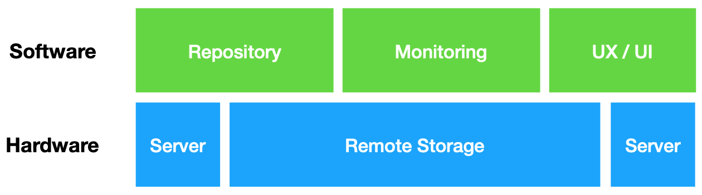
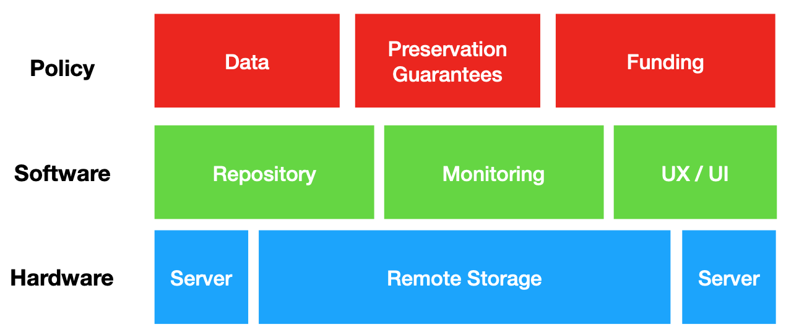
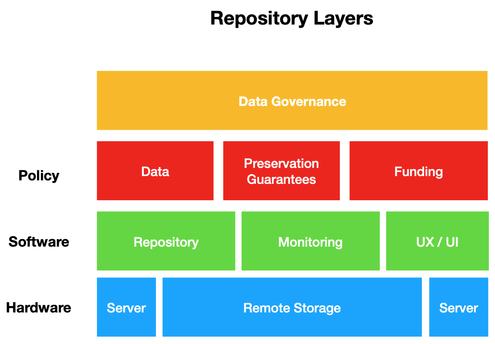
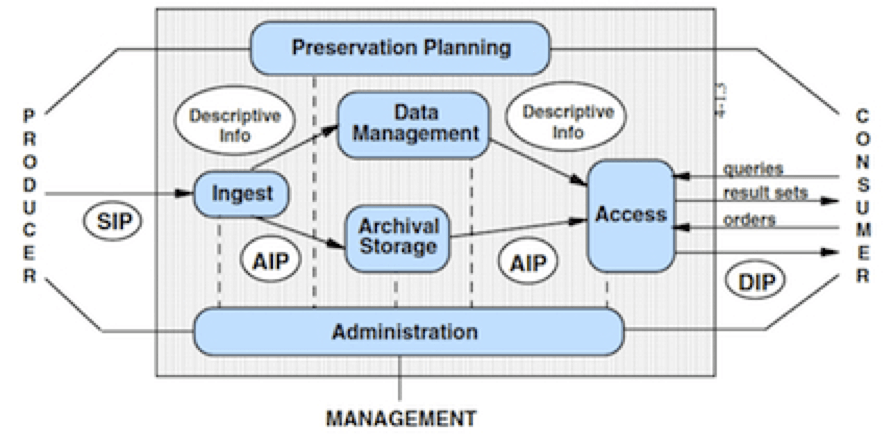

Chapter 7 Repository Architectures
In the most generic sense, data repositories provide for the publication and long-term preservation of data. As a sociotechnical infrastructure data repositories also play a key role in data discover, in data packaging, and in the day to day work of curation. In this chapter I will build upon DC 1’s discussion of a data repository as a layered “architecture” for curation. In doing so I will introduce the ISO standard for an Open Archival Information System (OAIS), and relate this to contemporary repository software architectures that facilitate data publishing, access, citation, and preservation.
7.1 Repositories
The last 20 years have seen data increasingly published to the web as structured information free for sharing and reuse. We have, thus far, discussed multiple innovations that have made this increase in data collection and publishing possible, including how data are practically stored, retrieved, and packaged for reuse. Early efforts at increasing data access focused specifically on how to embed data in electronic publishing environments (Abiteboul et al, 2000) and how to provide programmatic access to data that were stored on remote servers (Richardson et al, 2013). Over the last decade technologies have been developed to better connect different components of the data publication lifecycle - starting from a small number of hard to use proprietary repositories to a diverse range of (slightly easier to use) open-source options. These repositories depend on an “architecture” - that is a complex and highly coordinated integration of software, hardware, and human services.
7.2 Layers of a Data Repository
In Data Curation 1 we discussed the idea that repositories are a series of technical “layers” or a “stack” of technologies - each layer consists of a set of services and interfaces that allow data to be reliably preserved and published for reuse. The layers of a repository are, roughly, as follows:
- Hardware: The hardware layer of a repository consists of technologies that practically store, and serve data to a software layer. The hardware layer of a repository practically, at minimum, consists of a set of servers (hosting databases, websites, etc) and a set of backup storage environments such as spinning disks or tape-based storage. The hardware layer is closest to what we described in the Introduction chapter as the “Physical” layer of a computing system (hence the “hard” in hardware).
 - Software: The software layer of a repository consists of code that practically runs a web-interface, and provides APIs that connect different servers to one another so that data can be reliably retrieved, and served to end-users. The software layer presents a graphic user interface to “customers” of the data repository and allows for ease of access. This software layer also provides a graphic user interface for curators who manage deposits to a data repository, and allows for metadata and other descriptive elements to be attached to data before it is ingested into a long-term storage environment. Often the software layer of a repository is described as a “repository framework” (e.g. Dataverse, CKAN, or DSpace) - this simply means the different software components that are particularly configured for data access and preservation (more on this below). The software and hardware layer practically carry out preservation and long-term storage of data.
 - Policy: The policy layer of a repository consists of curation services such as deposit, ingest, metadata creation, and publication of data to the web. The policy layer provides specific rules for how these services are to be carried out, and specifies who is in charge of what practical functions of data publication and preservation.
 - Governance: The governance layer of a repository consists of institutional guidelines that specify how data should be managed over the long term, the rights of data producers and consumers, and the intellectual property claims that can be made by any institutional actor.
7.2.1 Data Preservation + OAIS
Throughout the course we have defined data as “information objects playing the role of evidence.” At the lowest level of abstraction all digital “information objects” are a binary sequence of 1’s and 0’s - that is, they are bits of information that are encoded on storage media. At the hardware level, data repositories provide a way for data (as encoded binary information) to be reliably stored on media such as an optical or spinning disk. At the software layer, a data repository provides an interface so that curators can manage and prepare data for archiving at the hardware layer.
The preservation component of a layered repository architecture can’t be overstated in importance - it is this combination of hardware and software that enable data repositories and curators to reliably provide for long-term archiving of data such that data remain accessible indefinitely.
To better understand the services and functionalities of a repository in terms of preservation, I will briefly introduce and discuss the Open Archival Information System (OAIS).
The OAIS is a conceptual model (sometimes called a “reference” model) for describing the design and responsibilities of reliable long-term preservation repositories. OAIS was developed by NASA data curators in the late 1990s, but has since been adopted as an International Standard (ISO).
As a conceptual model OAIS does not specify particular software or hardware requirements, but instead describes the core functions necessary to carry out reliable data preservation in any repository. In short, an OAIS provides a vocabulary for different data repository designers, curators, and administrators to generically describe the practical services and technical components that are necessary for reliable long-term preservation.
The OAIS literature can be a bit dense and difficult to comprehend on first read. I will attempt to give just a preliminary overview of this conceptual model below.1 In lecture this week I will describe the OAIS as it applies to a use case from the Qualitative Data Repository (QDR). So, just a warning that if this seems overly conceptual or abstract - be sure to watch the lecture so that you have a concrete working example to apply these terms.2
7.2.1.1 OAIS Roles
In an OAIS there are three specific roles that humans play:
- Producers - These are the content providers. They submit data to be preserved by an OAIS.
- Consumers - These are the “users” of an OAIS. They will browse, search, and request data from an OAIS.
- Management - These are the individuals charged with carrying out the functions of an OAIS. Management is practically charged with preserving data, creating information packages (described below) and developing policies for the OAIS.3
One of the fundamental concepts of an OAIS is a “Designated Community” - this is the specific set of producers and consumers that are served by an OAIS. Management has the responsibility of clearly defining a designated community for an OAIS, and monitoring their emerging needs. In the OAIS a designated community is assumed to have a particular “knowledge base” - this is what that community can be reliably expected to know about the holdings of a data repository. In an OAIS most of the work in generating metadata, and packaging data are in service of the “Designated Community” needs. A curator necessarily has to have a deep understanding of the designated communities needs, and monitor these shifting or changing needs over time.
7.2.1.2 OAIS Information Packages
In an OAIS all content is described in terms of an “information package” consisting of data, metadata, and a machine-readable log of any preservation actions that have been taken by an OAIS. There are three specific types of information packages in an OAIS:
- Submission Information Package (SIP): A submission information package is the data that a
Producersends to an OAIS to preserve. A SIP is initially submitted to an OAIS and then managed by curators. - Archival Information Package (AIP): A SIP is transformed into an archival information package by a curator. This transformation might consist of activities like enhancing metadata about the SIP, and practically storing different components of the SIP in a repository’s hardware. It is worth noting that these activities may also include creating new copies of the data, or transforming the data to a new format. The AIP is what is ultimately ingested by an OAIS for long-term preservation.
- Dissemination Information Package (DIP): When a
Consumerrequests data from an OAIS, a curator will assemble an AIP (or multiple AIPs), to create a package of data to be delivered to theConsumer. The DIP is then, practically, what theConsumerreceives from an OAIS as data.
7.2.1.3 OAIS Core Services
Any OAIS is expected to carry out 6 core activities: Ingest, Archival Storage, Data Management, Preservation Planning, Access, and Administration
- Ingest: When a SIP is received a curator transforms this package into an AIP and prepares this package to be preserved. This is, in essence, the procedure for getting data into the long-term storage environment of a repository.
- Archival Storage: After an AIP is created, the components (such as metadata or data files) are practically stored in multiple environments.
- Data Management: Over time, a curator will perform preservation actions against an AIP. Recall that in previous chapters we discussed the role of “checksums” for creating a reliable way to transfer data from one entity to another. A checksum is also used within an OAIS to insure that the data being stored has not become corrupted, and is what it purports to be (that is, the data have authenticity).
- Preservation Planning: In addition to managing data, an OAIS will plan to refresh or update storage media, maintain software, and regularly monitor a designated community’s needs to ensure that preserved data can be reliably retrieved and served to Consumers.
- Access: In creating DIP’s for a designated community, an OAIS is expected to continually monitor end-user services that can guarantee search and discovery of data remains consistent for Consumers. The access service of an OAIS also requires continual monitoring of the designated community to insure that their needs are being met.
- Administration: Finally, the Management role of an OAIS is expected to govern, and make strategic funding or licensing decisions that can guarantee the long-term accessibility and authenticity of stored data.
Collectively, each of these services are carried out by the Management role in an OAIS, and often apply to a particular information package as it moves through an OAIS (from Producer to Consumer).
7.2.1.4 The OAIS Model
The following diagram is a quick (but admittedly busy) overview of the three major components of an OAIS (Roles, Information Packages, and Services). The diagram should be read moving from right to left - that is Producers deposit a SIP, Management transforms a SIP to AIP and also provides services (within the OAIS), and Consumers request AIPs that are delivered as a DIP.4. Inside the OAIS all core services are performed (this is denoted by the black lined boundary separating Consumers and Producers from the repository)

To reinforce one important point about the OAIS model - as depicted in this diagram - it is conceptual. It provides a reference language that is not specific to any one repository, but can be used to describe roles, services, and information packages that are managed by ANY data repository.
7.2.2 Data Repository Frameworks
As I mentioned at the beginning of this chapter, the curation community has over the last decade developed a number of repository frameworks that make the day to day work of curating, publishing, and preserving data practically possible. These frameworks are often marginal in their differences - they each use a slightly different set of hardware and software components to practically carry out specified functions of an OAIS. But, these marginal differences have important implications for institutions in selecting, implementing, and running a data repository. A repository framework like CKAN for example is content agnostic - it doesn’t have any specific features that are developed for a particular designated community. Instead it is a highly modifiable open-source technology that can be practically used by governments, scientific institutions, or industry that have access to general hardware. Somewhat oppositely, a repository framework like Dataverse is developed specifically for social science data. Dataverse provides functionality to social science data curators that need to implement specific metadata standards when creating an AIP, and is configured to run on the type of hardware that is often available to a university IT staff. Dataverse also has features that allow for Consumers and Producers to register for OAIS services based on their university credentials (e.g. that they are a verified member of a particular university). This registration process is an important way for Management to implement what an OAIS describes as Access controls - who can deposit data, who can search for and obtain data, etc.
The three most prevalently used data repository frameworks that you are likely to encounter are Fedora, CKAN, and Dataverse. Fedora, the repository we haven’t yet discussed, is a highly extensible framework. This means that Fedora provides a core set features that have, in turn, a core set of hardware dependencies. These core features can be modified and tailored by any institution that has unique needs for serving a “designated community”. This extensibility is a major feature of Fedora, and has resulted in what can seem like a dizzying array of repository frameworks that differ by name and feature-set. Mike Giarlo, a data curation developer, has helpfully provided an overview of the evolution of Fedora in the image below.

I provide this so that you can get a quick overview of the ways a repository framework like Fedora can be modified and reused across institutions based on their specific needs for serving a designated community. It is worth nothing that even as someone who has worked in this field for 10 years, it wasn’t until Mike provided this diagram that the relationship between different repositories was even remotely clear to me. So, if reviewing and reading documentation about repositories seems confusing - welcome to the club!
The important concept to take away from this brief overview of existing frameworks available to data curators is that there are multiple different ways in which to practically set up a storage and preservation environment. The particular services and roles that are played within a repository are shaped by what the framework is designed primarily to achieve (e.g. serving one particular community versus another), but ultimately Management in an OAIS has the discretion to set policies and to govern data as they best see fit. It is in this sense that a repository is a sociotechnical infrastructure - its the combination of people and technologies that practically serve designated communities.
7.2.3 Summary
This chapter has reviewed the major architectural components of a data repository, including the software, hardware, policy and governance “layers”. In describing the relationship between hardware and software layers we looked specifically at a conceptual model, the Open Archival Information System (OAIS), to better understand how preservation is carried out between different stakeholders - including Consumers, Producers and Management. Less abstractly, I also introduced the idea of a repository as a framework that is practically implemented with specific hardware and software configurations that are meant to serve a particular designated community. In the readings below, there are links to the technical specifications for each of these repository frameworks - I highly encourage you to pick one of these and skim the documentation to understand exactly how concepts in the OAIS model are implemented.
Chapter References
- Abiteboul, S., Buneman, P., & Suciu, D. (2000). Data on the Web: from relations to semistructured data and XML. Morgan Kaufmann.
- Richardson, L., Amundsen, M., Amundsen, M., & Ruby, S. (2013). RESTful Web APIs: Services for a Changing World. " O’Reilly Media, Inc."
7.3 Lecture
7.4 Readings
Required
Read this very brief description of digital libraries (cyberinfrastructure) from the National Science Foundation program launched in the mid 1990. It provides a nice and very brief description of how data repositories have emerged from early digital library funding: https://web.archive.org/web/20190207233414/https://www.nsf.gov/news/special_reports/cyber/digitallibraries.jsp
Now, let’s fast forward to a current landscape of many different repository software platforms available. The following post from the IQSS staff at Harvard’s Dataverse provides an excellent table comparing existing data repository services. Pay attention to the categories being compared, and how this related to the affordances of the software (also see the ‘optional readings’ section for more literature like this): https://dataverse.org/blog/comparative-review-various-data-repositories
Next, read this “overly honest” report from the University of Illinois Library (the largest circulating academic library in the world) on developing a data repository:
- Fallaw, C., Dunham, E., Wickes, E., Strong, D., Stein, A., Zhang, Q., … & Imker, H. J. (2016). Overly honest data repository development. Code4Lib https://journal.code4lib.org/articles/11980
Review documentation for just one repository platform listed below. Be sure to also look at an example of the platform’s deployment.
Samavera (Open-source repository for universities and institutional repositories)
- About https://samvera.org/samvera-open-source-repository-framework/
- Technical Stack https://samvera.org/samvera-open-source-repository-framework/technology-stack/
- Example deployment: https://digital.sciencehistory.org/
Dataverse (Open-source repository for social science data)
- About: https://dataverse.org/about
- Documentation: http://guides.dataverse.org/en/latest/
- Example deploymenst: https://data.qdr.syr.edu/ or https://dataverse.tdl.org/
- See the QDR Core Seal Trust documentation for more details on how Dataverse is configured: https://www.coretrustseal.org/wp-content/uploads/2018/11/Qualitative-Data-Repository.pdf
Fedora (Open-source repository with semantic capabilities - often used by science repositories)
- About https://duraspace.org/fedora/about/
- Specifications https://duraspace.org/fedora/resources/technical-specifications/
- Developer Wiki: https://wiki.duraspace.org/display/FF
- Example Deployment: https://archaeologydataservice.ac.uk/
- ADS certification documentation for further info on how they use Fedora https://assessment.datasealofapproval.org/assessment_96/seal/html/
CKAN (open-source data repository - often used for civic data)
- About: https://ckan.org/
- Documentation: https://docs.ckan.org/en/latest/sysadmin-guide.html
- Example deployment: https://data.gov.au/ + Data.gov
- Some additional info on Data.gov.au’s CKAN: https://ckan.org/portfolio/data-gov-au/
Clowder (Open-source for long-tail data)
- Description of project: https://clowder.ncsa.illinois.edu/
- Description of technical design https://dl.acm.org/citation.cfm?id=3219159
- Example deployment: http://criticalzone.org/iml/
Additional optional reading:
Amorim, R. C., Castro, J. A., Da Silva, J. R., & Ribeiro, C. (2017). A comparison of research data management platforms: architecture, flexible metadata and interoperability. Universal Access in the Information Society, 16(4), 851-862. https://repositorio-aberto.up.pt/bitstream/10216/111537/2/229906.pdf
- Lnenicka, M. (2015). An in-depth analysis of open data portals as an emerging public e-service. International Journal of Social, Education, Economics and Management Engineering, 9(2), 589-599. (see table 3 in particular for a comparative approach to Open Data portal evaluation) https://pdfs.semanticscholar.org/f83e/e7fa439fb9011ff064a90a42a2c2f1fb43b4.pdf
- Cornell University Library Repository Principles and Strategies Handbook (I highly recommend this if you are looking for some background on how a University Library strategizes around digital infrastructures) https://confluence.cornell.edu/display/culpublic/Cornell+University+Library+Repository+Principles+and+Strategies+Handbook
Blanke, T., & Hedges, M. (2013). Scholarly primitives: Building institutional infrastructure for humanities e-Science. Future Generation Computer Systems, 29(2), 654-661. https://www.sciencedirect.com/science/article/pii/S0167739X11001178
7.5 Exercise
There is no exercise this week. However, if you would like to apply some of the concepts that have been reviewed in the Chapter and in Lecture you can see this optional component of your protocol assignment for selecting and evaluating a repository framework.
If you are interested in this kind of content - I suggest taking Digital Preservation where we discuss these concepts in greater depth. But, as emerging professional curators it is helpful to at least understand the core concepts of an OAIS, and how they apply to the curation services of a data repository.↩
Caveat: I am the Technical Director of QDR↩
Critically - the OAIS as a conceptual model does not specify a specific role for curators - it leaves the actual day to day work, and long-term maintenance of the repository somewhat undefined in the management role. This is a major limitation of the model, but for now let’s just waive our hands at this omission↩
See - I told you there was a lot of jargon↩